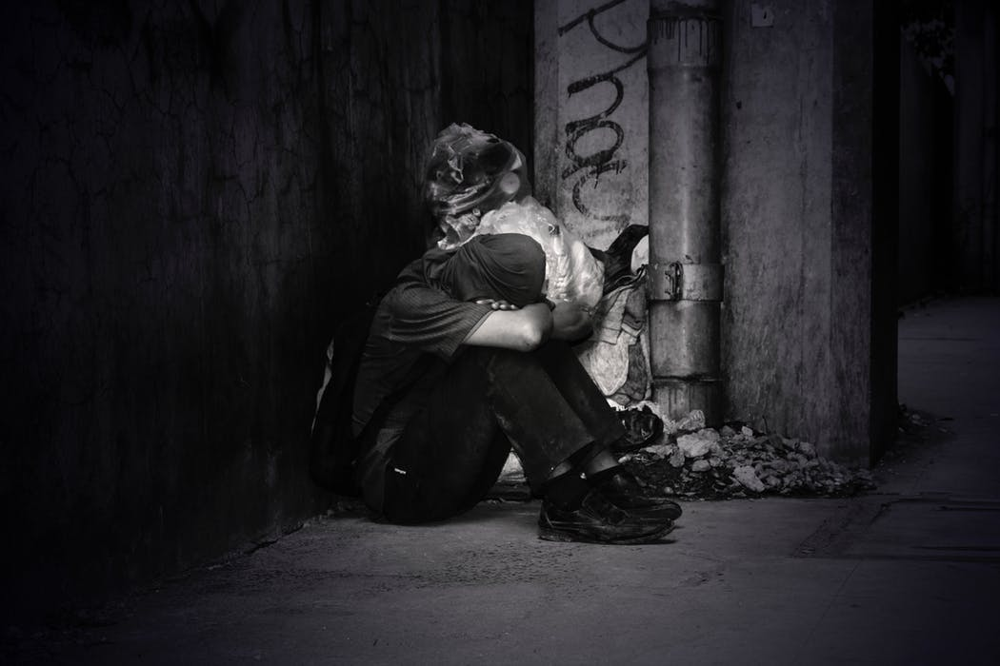
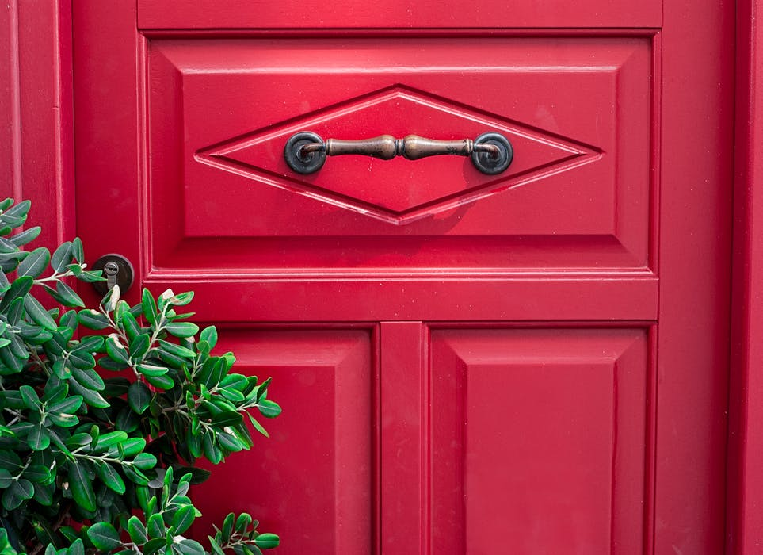

Once upon a time there was a boy named Henry. Who was locked away in a room with two doors.
Inside this room there was a red door and a blue door.
The boy does not know how he ended up here and cannot seem to escape this room.
It appears to be some kind of unknown magic.
Only you can choose which door the boy goes through but, choose carefully.
Depending on which door you choose. It Will affect Henry for the rest of his life.
Sending him through a magical portal leading into a new dimmension.
The red door and the blue door lead the boy to two very diffrent dimmensions.
One door sends him on a good path and the other leads to a bad one.
But beware, because both doors have hidden curses attchaed to them.
Your next click will determine his eternal fate.
 "homeless man" By Alvin Decena Licensed under CC 2.0The red door on the left side of the room is grand. It stands tall with a giant ladder in front it.
The ladder leads the boy up to open the red door by twisting the gold handle attached to it.
Once the door is unlocked the boy must step through it.
Sending him through a time portal into a diffrent dimension.
On the other side in this new dimension is a life of riches waiting for the boy.

"Red door" By Eneida Nieves Licensed under CC 2.0The blue door on the right side of the room is also grand in size.
It is covered in architectural designs that attract the boy to it as he approaches.
There is a silver knob attached to this door.
The key is already in the keyhole waiting for him to unlock it and seal his fate.
If you choose this door it will send the boy through a time portal in another dimension.
To a life filled with love. He will also have a family waiting for him on the other side.
 "Architecture art blue door"
By Pixabay
Licensed under CC 2.0
"Architecture art blue door"
By Pixabay
Licensed under CC 2.0